最終更新: 2026-05-20（v6.x 対応版）
PRISM MeetSync は、会議の日程調整をお手伝いするツールです。普段の日程調整では、候補日をメールで送り、返信を集め、表にまとめて…と、かなりの手間がかかります。MeetSync を使うと、この流れを画面上の操作だけで進められます。
MeetSync がやってくれること
| 呼び方 | 意味 |
|---|---|
| コア参加者 | 先にご都合を伺いたい中心メンバー（例: 主催の先生方） |
| 投票者 | 出欠を回答していただく一般参加者 |
| 共通ポータル | 関係者全員が進捗を閲覧できる公開ページ |
「コア参加者」が0名でも問題ありません（全員一斉に出欠確認するパターン）。
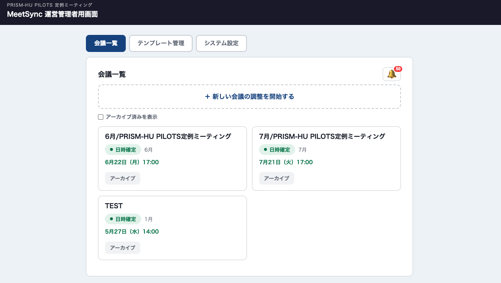
PRISM-HU 事務局から受け取った「運営担当者用URL」を開くと、初回のセットアップウィザードが立ち上がります。画面の案内に沿って、組織の情報・テンプレートを登録していきます。
運営担当者用URLについて
このURLは、運営の権限を持っているURLです。第三者に共有しないようご注意ください。万が一漏れてしまった場合は、PRISM-HU 事務局までご連絡ください。再発行いたします。
Step 1: 組織情報 — 組織名、敬称、メール冒頭の文（お世話になっております等）
Step 2: テンプレート名 — 例「定例ミーティング」など、会議の種類が分かる名前
Step 3: コア参加者の情報
Step 4: 投票者リスト — 「＋ 追加」で増やす／「×」で削除
Step 5: 調整の時間帯 — 開始時刻・終了時刻の初期値（例: 13:00〜18:00）
ここで登録した内容は、後からいつでも変更できます。
「毎月の定例会議はいつも同じメンバーで調整している」――そんなときに便利なのがテンプレートです。参加者の構成パターンに名前をつけて保存しておくと、会議を作るたびに一から入力する手間が省けます。
活用の例
画面上部の 「テンプレート管理」 タブを開くと、登録済みのテンプレートがカード形式で並んでいます。
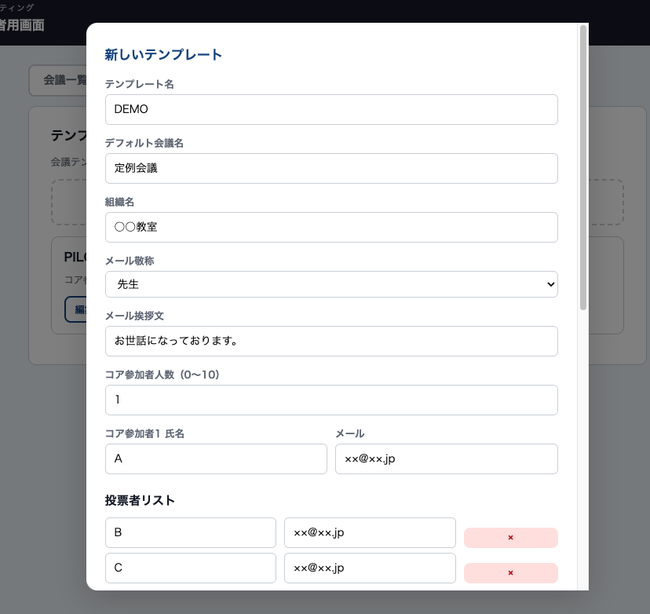
テンプレートを変更・削除しても、そのテンプレートから既に作成した会議には影響ありません。
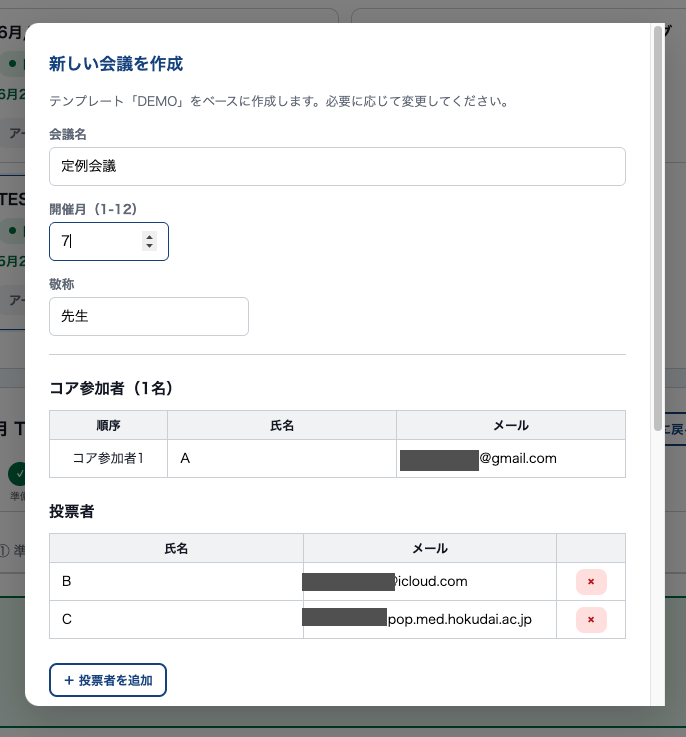
ここでの変更は今回の会議だけに適用されます。テンプレート自体は変わりません。
会議を作成すると、画面上部に7段階の進行ステップが表示されます。左から順番に進めていきます。
コア参加者がいない場合は ①→④→⑤→⑥ の流れになります。
会議名、開催月、参加者などを確認・編集するステップです。
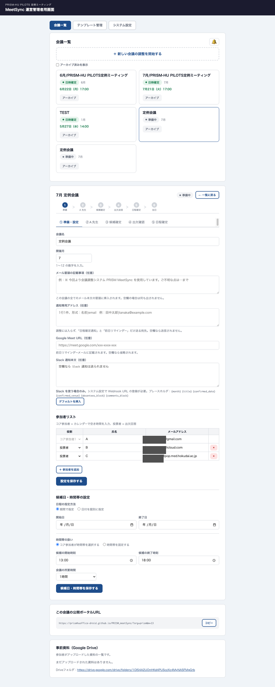
コア参加者ごとに専用のタブが表示されます。タブを開いて、調整期間・時間帯・回答期限を設定したうえで、URLを送信します。
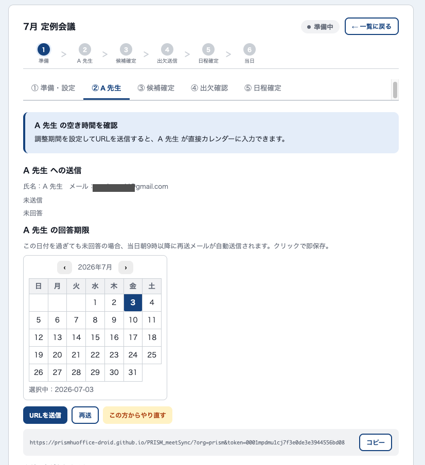
調整期間と時間帯:
回答期限: コア参加者タブの月カレンダーで、回答してほしい日付をクリックします。期限の朝9時以降に未回答だった場合、自動で1回リマインドメールが送られます。
URLの送信: 「URL を送信」 ボタンを押すと、対象の方に専用URLのメールが届きます。
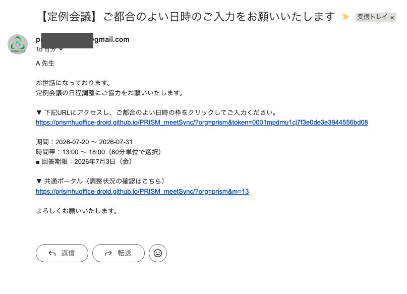
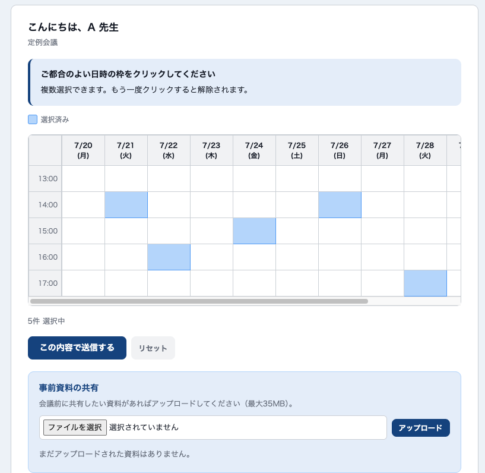
2番目以降の方について
コア参加者から「都合が変わった」と連絡があったとき
各コア参加者のタブに 「この方からやり直す」 ボタンがあります。クリックすると、そのコア参加者と以降のコア参加者の回答がクリアされ、調整ステータスがそのコア参加者の段階に戻ります。確認ダイアログで対象範囲を確認のうえ実行してください。やり直し後は改めて「URLを送信」してください。
既に送信済みのメールは取り消せませんので、必要に応じて「再調整します」等のご連絡を別途行ってください。
参加者全員に提示する候補日時を決めるステップです。
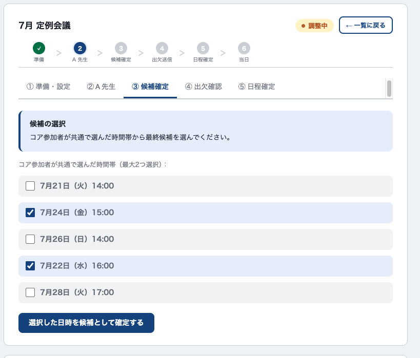
投票者の回答期限: 候補確定タブの下部にある月カレンダーで、投票者の回答期限を選択します。ここで選んだ日付が、出欠確認メールの本文中に「■ 回答期限：…」として記載されます。
確定した候補日時について、投票者全員に出欠を確認するステップです。
「出欠確認メールを送信する」 を押すと、投票者全員にメールが一斉送信されます。参加者はメールに記載されたURLを開き、○△× で回答します。未回答の方には 「再送」 ボタンで個別にリマインドメールを送信できます。
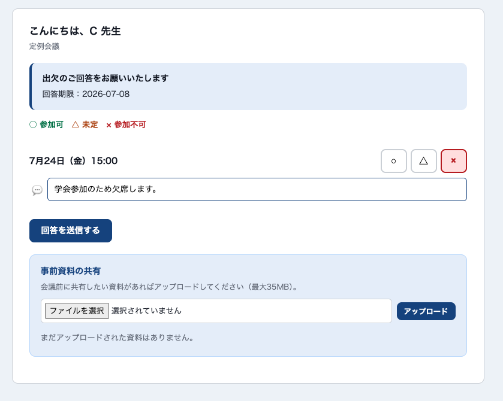
運営担当者側では、集計表でどの日時に誰が○△×と答えたかが一覧できます。コメント欄に投稿があった場合は、表の下にまとめて表示されます。
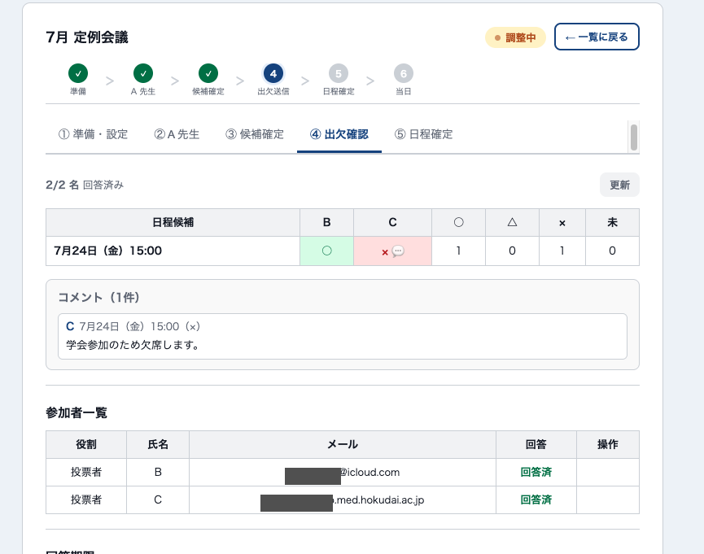
全参加者に確定通知メールが自動送信されます。会議の前日には全参加者にリマインドメールが届き、当日にはポータル画面のステータスが「本日開催」に切り替わります。いずれも自動です。
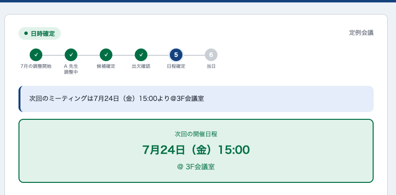
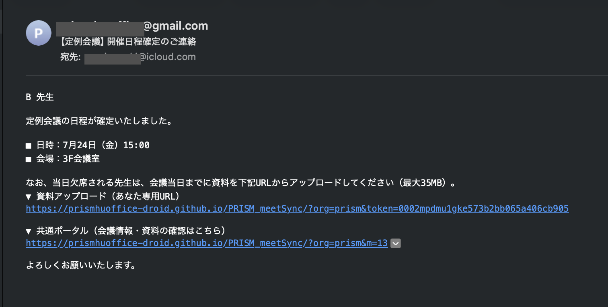
資料アップロード機能・Slack 通知・通知専用アドレスを設定している場合は、ここで一緒に処理されます（詳しくは「7. オプション機能」を参照）。
「🗄 アーカイブ」 ボタンで一覧から非表示に。「アーカイブ済みを表示」で再表示、「復元」で元に戻せます。
⑥ の画面にある 「ステータスをリセット」 で、参加者リストはそのままに、回答データだけがクリアされます。
画面右上の 🔔 アイコンで、コア参加者の入力・投票者の回答・資料アップロードなどの最新の動きを確認できます。
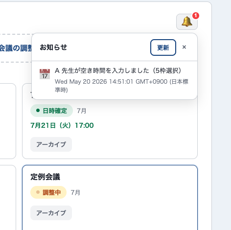
各会議には「共通ポータルURL」が用意されています。関係者に共有すると、進捗を見てもらえます（閲覧専用）。メール本文にも自動で記載されます。
① 準備・設定の 「メール冒頭の記載事項（任意）」 に入力した文章が、その会議の全メールの冒頭に挿入されます。システム導入時の案内・会場変更・コロナ対策など、その回特有の連絡事項に活用できます。
会議のスタイルに合わせて、必要なものだけ有効化できます。使わなければ画面にも表示されませんので、関係ない機能が邪魔になることはありません。
こんなときに使う: 日程調整（出欠回答）には参加しないけれど、決まった日程と前日のリマインドだけお知らせしたい方がいる場合。たとえば名誉教授や顧問の先生、関連部署の責任者、議事録担当の事務局など。
設定の場所: ① 準備・設定タブ → 「通知専用アドレス（任意）」欄（テンプレート編集画面にも同じ欄があり、新規会議に引き継がれます）
入力形式: 1行1件、名前|メールアドレス の形で書きます。
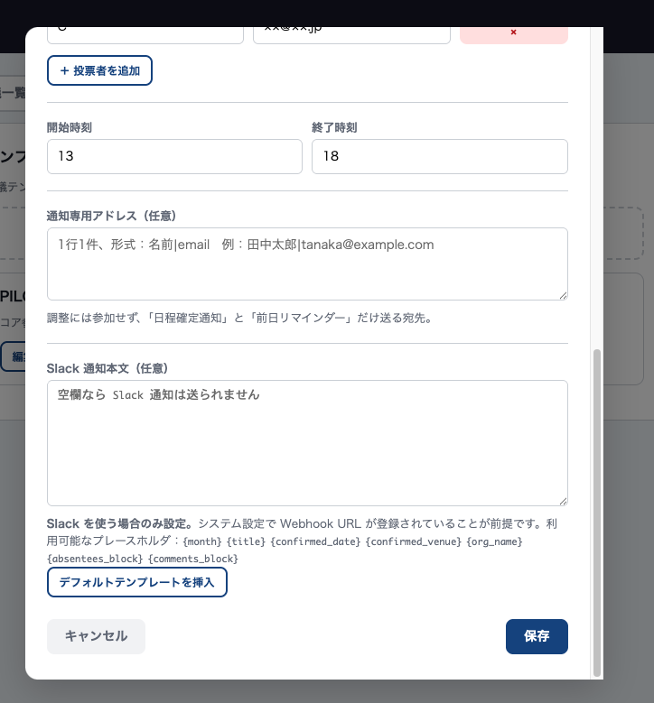
動作:
空欄なら何もしません。途中から追加することもできます。
こんなときに使う: 当日欠席する方の発表資料を事前に集めたい場合や、参加者で資料を共有したい場合。
仕組み:
メールへの自動掲載:
不要であれば特に何もする必要はありません。参加者がアップロードしなければそのまま会議が進みます。
こんなときに使う: オンライン会議や、ハイブリッド開催のときに、Meet URL を前日リマインダーメールに自動で載せたい場合。
設定の場所: ① 準備・設定タブ → 「Google Meet URL（任意）」欄
URLをそのまま貼り付けて「設定を保存する」を押すだけです。
動作:
こんなときに使う: 教室で Slack を使っていて、日程確定時に指定チャンネルへ自動で通知を流したい場合。
準備: Slack の「Incoming Webhook」というURLを取得し、システム設定に1度だけ登録します（取得方法は PRISM-HU 事務局までお問い合わせください）。
設定の場所:
通知の内容例:
動作:
Q: 参加者にも Google アカウントが必要ですか？
いいえ、必要ありません。メールに届くリンクを開くだけで回答できます。
Q: スマートフォンでも操作できますか？
はい。管理画面・参加者の回答画面ともにスマートフォンのブラウザで利用できます。
Q: 複数の会議を同時に調整できますか？
はい。会議一覧から切り替えて、それぞれ独立して進められます。
Q: コア参加者の順番を変えたい場合は？
① 準備・設定の画面で、対象の方の役割を入れ替えて保存してください。
Q: 調整の途中でメンバーを追加できますか？
はい。① 準備・設定でメンバーを追加して保存してください。既に送信済みの出欠確認メールは新メンバーには届かないので、⑤ 出欠確認で個別に「再送」してください。
Q: コア参加者の回答期限を過ぎても回答が来ません。
期限当日の朝9時以降に自動でリマインドメールが1回送信されます。それでも回答がない場合は、コア参加者タブの「再送」ボタンで追加のリマインドを送れます。
Q: 一度確定した日程を変更できますか？
⑥ の「ステータスをリセット」で調整をやり直せます。既に送信済みの確定通知メールは取り消せないので、変更がある旨を別途参加者にお伝えください。
Q: メールの冒頭に注意書きを入れたい。
① 準備・設定の「メール冒頭の記載事項（任意）」に入力して保存してください。その会議に関する全メールの本文冒頭に挿入されます。
Q: 管理画面が開けません。
URLをもう一度ご確認ください。それでも解決しない場合は PRISM-HU 事務局までお問い合わせください。
Q: 参加者から「URLが開けない」と連絡がありました。
参加者の情報を編集した場合、以前のURLが無効になることがあります。⑤ から該当者に「再送」でメールを送り直してください。
Q: 管理用のURLが他の方に知られてしまったかもしれません。
PRISM-HU 事務局までご連絡ください。新しいURLを再発行いたします。
Q: 通知専用アドレスを後から追加できますか？
はい。調整が進行中の会議でも、① 準備・設定の「通知専用アドレス」欄に追加して「設定を保存する」を押せば反映されます。次の日程確定通知・前日リマインダーから新しい宛先にも届きます（既に確定済みの会議では、確定通知は遡って送られませんのでご注意ください）。
Q: Slack 通知を後から有効にしたい。
システム設定タブで Webhook URL を登録し、テンプレート（または該当会議の準備・設定タブ）で Slack 通知本文を入力すれば、その時点以降の日程確定で通知が飛びます。Webhook URL の取得方法は PRISM-HU 事務局までお問い合わせください。
Q: Google Meet ではなく Zoom や Teams を使いたい。
「Google Meet URL（任意）」欄に Zoom や Teams のURLを貼ってもメール本文には記載されます。ただし表示文言が「■ Google Meet：」となっていますので、URL自体が Zoom/Teams のものでも構わないか、ご自身でご判断ください（別の文言に変更したい場合は事務局までご相談ください）。
Q: 資料アップロード機能は使わなくてもよいですか？
はい。参加者がアップロードしなければそのまま会議が進みます。メール本文には「当日欠席される先生は…」という案内が自動で入りますが、使わない教室では参加者が誰もアップロードしないだけで実害はありません。案内文自体を削除したい場合は、PRISM-HU 事務局までご相談ください（カスタマイズ対応）。
PRISM-HU 事務局
prism-hu-office@pop.med.hokudai.ac.jp
（件名に「MeetSync」とご記載いただけますと、対応がスムーズになります）